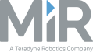

Fornitura
Un ampio catalogo di robot da scegliere e configurare, consegnati in massimo 6 settimane.
Visualizza il catalogoAffianchiamo i team Innovation, R&D e Automazione aiutandoli ad integrare la robotica industriale nei processi logistici e produttivi, un passo alla volta.




Un ampio catalogo di robot da scegliere e configurare, consegnati in massimo 6 settimane.
Visualizza il catalogoProgrammi di formazione aziendale per team interni: ROS 2, simulazione in digital twin, embodied AI e sicurezza dei sistemi robotici.
Scopri i programmi di formazioneI nostri modelli di collaborazione, dal più semplice al più strutturato.
Aziende che vogliono capire dove e come introdurre la robotica nei propri processi.
Team R&D, Innovation e Automazione che vogliono sviluppare il progetto internamente e costruire competenze in azienda.
Aziende che hanno già individuato il caso d’uso e vogliono affidarne sviluppo e validazione.
Simulazione, visione, manipolazione e controllo richiedono sviluppo personalizzato su ogni robot. Abra ha sviluppato una suite di strumenti per velocizzare questi processi, rendendoli allo stesso tempo più efficaci e replicabili.
Sapere se un'isola robotizzata si può realizzare e quanto costa, prima di approvare il progetto.
Scopri Cell SimulatorArrivare a un POC su G1, H2 e R1 partendo da visione e manipolazione già integrate.
Scopri Humanoid StudioGestire uno o più quadrupedi Unitree da un'unica dashboard, senza costruire l'integrazione.
Scopri Fleet ControlIl grado di adozione cambia in base al tipo di robot e all'applicazione. Il quadro seguente è la base con cui Abra valuta ogni caso d'uso. Etichette da validare con il socio tecnico.
Per ogni caso d'uso, un progetto pilota circoscritto verifica la fattibilità tecnica e la sostenibilità economica prima dell'investimento.
Richiedi un confronto tecnicoI casi non in elenco vengono esaminati nella fase di fattibilità.
Il Team Abra è composto da ingegneri specializzati in robotica ed embodied AI, con un percorso costruito tra ricerca applicata, aziende tecnologiche e startup.
Foto e link LinkedIn da aggiungere
È una ricostruzione virtuale dell'ambiente operativo che riproduce la fisica del mondo reale. Ci permette di verificare se un robot può svolgere un compito prima di acquistare o spostare hardware, riducendo tempi e costi della sperimentazione.
Usiamo i nostri strumenti nei progetti di sperimentazione. Le modalità di accesso per i team del cliente vengono definite in base al progetto. Modello commerciale da definire.
La simulazione individua presto i limiti strutturali del robot, come carico utile, equilibrio e movimento. Non sostituisce il test reale: per questo ogni progetto prosegue con la validazione nel nostro laboratorio e poi nell'ambiente del cliente.
No. Chi ha già individuato il modello riceve preventivo, configurazioni disponibili e tempi di consegna. Consegniamo il robot configurato e pronto all'uso.
Dipende dal caso d'uso e dalla complessità dell'ambiente. Durata e criteri di valutazione vengono definiti al termine dell'analisi di fattibilità.
Sì. La Robotics Academy prevede sessioni pratiche per ingegneri e tecnici su robot, simulazione e programmazione, sui modelli adottati.
Seguiamo fattibilità, simulazione, validazione e progetto pilota. L'integrazione su larga scala viene valutata progetto per progetto. Da validare
Sì. I modelli programmabili (Go2 EDU, A2, B2, R1, G1, H2) supportano ROS 2 e si sviluppano in Python e C++ con l'SDK ufficiale Unitree.
Umanoidi e quadrupedi Unitree da 4 a 6 settimane. Per AMR e cobot i tempi dipendono dal produttore e li confermiamo nell'offerta.
Un tecnico Abra ricontatta l'azienda per un primo confronto su caso d'uso e requisiti.
Per chi ha già individuato il modello è disponibile un preventivo diretto.
Domanda 1 di 5